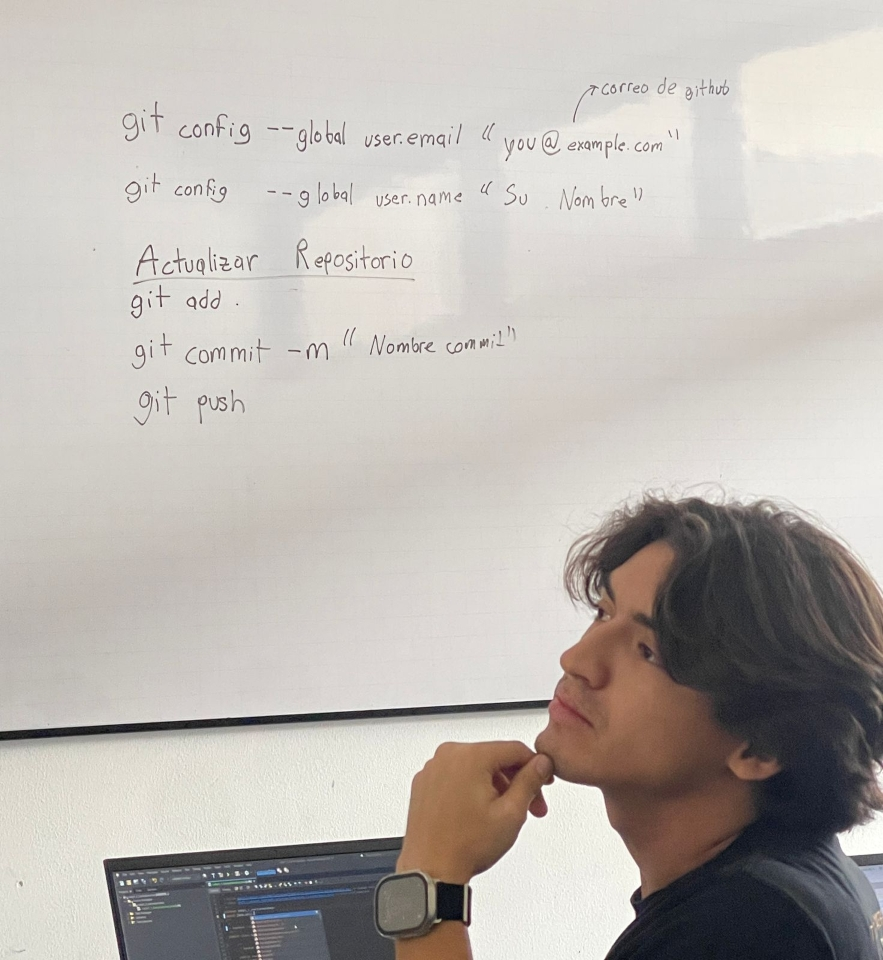
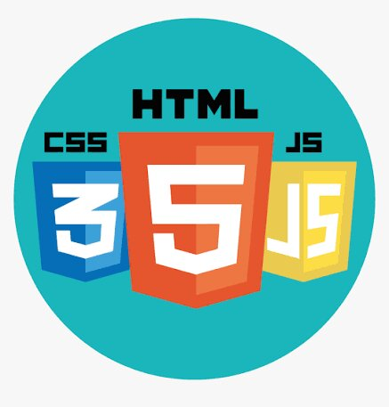
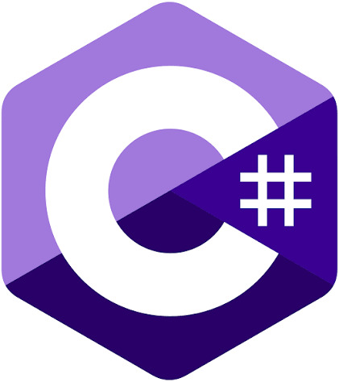
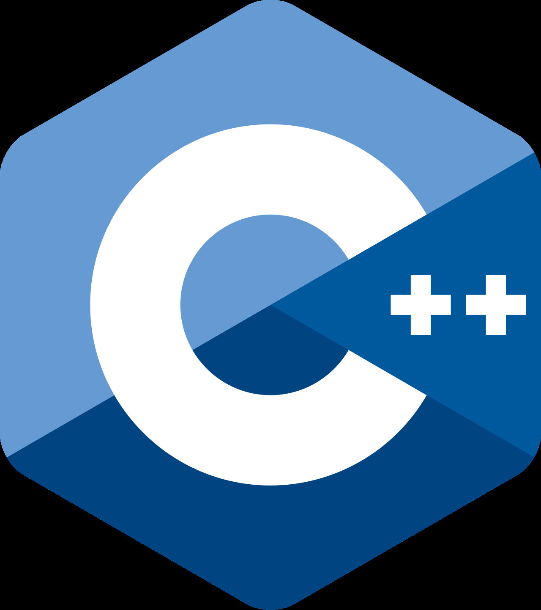

Soy un estudiante de la carrera de ingeneria en sistemas en Teguciglapa Unitec. La verdad es que entre a esta carrera con ganas de aprender hacer juegos, pero YA ME DI CUENTA QUE LA CARRERA ES MUCHO MAS QUE ESO. Puedo decir con confiansa que me gusta la carrera. Mas bien encontre algo que me apaciona mas el AI. Al punto de que hice mis dos propios AI's(ADAM AND EVE). Tambien gracias a la ingeneria logre comprar una impresora 3d y crear mi propio IRON MAN MRK42 HELMET.
COMO DICE EL INGIERO NELBREN "MY MEDALS"


